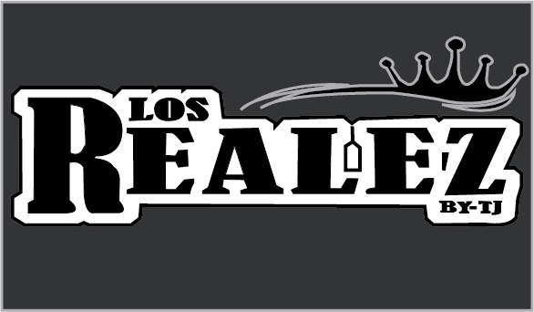

HISTORIA
El grupo los realez fue creado el 22 de octubre de 2022, el creador fue Arturo Unzueta Flores el cual también; es segunda voz y acordeonista, el cual inció con 5 integrantes quienes fueron, vocalista, acordeonista, bajista, bajo quintista y baterísta;, a lo largo de los años que llevan de agrupación; se han cambiado de integrantes que a sido el bajo quintista
MISIÓN
La misión;n de esta página es querer dar a reconocer mucho más al grupo para así atraer mucho más público que le guste disfrutar la música regional y de algunos covers y ver el potencial que tiene este grupo
VISIÓN
La visión es ser famosos y que tengan mucha más fama y así los puedan reconocer una empresa importante


©2024. Derechos reservados.
desarrollado por:Jose Eduardo Vale Rendon Matricula:02113031 Grupo:607
Plantel Nueva Tijuana